25/11/2026. Siete lotes y 28 actuaciones revisadas: se completan las que faltaban y se conservan las que ya tenían una implementación funcional. No se alteran daño, botín, tiempos de puzle, masa o rejilla de movimiento. Blender queda para una tanda posterior.
Para revisar: abrir LabInteraccionesCodigo.tscn en Godot y ejecutar la escena. Flechas izquierda/derecha cambian entre 18 muestras; R repite. Lámina completa (1920 × 2880) · Inventario de los siete lotes.
| Interacción | Estado | Resultado |
|---|---|---|
| Cristales cargados | Integrado | Emisión que respira durante la carga, arcos persistentes, debilitamiento final y descarga al extraer.objetos/cristal_pulso_3d.gd |
| Metal conductor | Integrado | Material húmedo y arcos solo cuando una fuente real electrifica su casilla.objetos/objetos_3d.gd |
| Mojado y electrificado | Integrado | Humedad y corriente combinables; la escarcha corta la conducción según las reglas existentes.presentacion/feedback_objeto_3d.gd |
| Nexo eléctrico | Integrado | Agua visible sobre la piedra, bornes con descargas al recibir corriente y corte al secarse.objetos/nexo_rayo_3d.gd |
| Interacción | Estado | Resultado |
|---|---|---|
| Nidos | Integrado | Sacudida fuerte y plumas al obtener recurso; sacudida suave durante la espera, sin apilar tweens.objetos/nido_3d.gd |
| Plantas | Integrado | Partículas al recoger y rebrote con animación; se mantiene la entrega del ingrediente.objetos/recolectable_3d.gd |
| Arbustos con bayas | Integrado | Silueta del arbusto agotado sin obstáculo adicional; máscara de frutos y restauración al rebrotar.objetos/recolectable_3d.gd |
| Recursos agotados | Integrado | Veta y cristal conservan silueta con aspecto diferenciado tras entregar mineral; siguen funcionando como conductores.objetos/veta_pulso_3d.gd |
| Interacción | Estado | Resultado |
|---|---|---|
| Cuencos | Completado sobre lo existente | Nivel y llenado existentes, más ondas al rellenar, burbujas al vaporizar y piedra húmeda.objetos/objetos_3d.gd |
| Recipientes vacíos | Integrado | Gotas residuales y secado visual de la piedra después de vaciarse; no se añade agua a la simulación.objetos/objetos_3d.gd |
| Surtidores y canales | Integrado | La banda húmeda del canal comparte el avance del agua; se conserva el caudal y la animación de la tinaja.presentacion/canal_3d.gd |
| Flotantes | Completado sobre lo existente | Balanceo físico existente por cuatro sondas, más ondas de entrada y estela según velocidad.objetos/flotador_3d.gd |
| Interacción | Estado | Resultado |
|---|---|---|
| Puertas congeladas | Completado sobre lo existente | Costra y vaho existentes, material de escarcha progresiva y gotas al descongelar.objetos/objetos_3d.gd |
| Metal caliente | Integrado | Emisión rojiza según el reloj real de calor y apagado al enfriar.presentacion/feedback_objeto_3d.gd |
| Escarcha golpeada | Integrado | Fragmentos visuales al recibir un golpe sólido por on_spell_hit, sin romper por ello el objeto.objetos/objetos_3d.gd |
| Secado por calor | Completado sobre lo existente | Transición por zonas del material húmedo y vapor del sistema existente; reloj visual independiente para recipientes.objetos/objetos_3d.gd |
| Interacción | Estado | Resultado |
|---|---|---|
| Bloques empujables | Integrado | Balanceo de arranque y asentamiento del hijo visual, más polvo al detenerse; raíz y rejilla intactas.objetos/bloque_empujable_3d.gd |
| Placas de presión | Integrado | Hundimiento visual proporcional a carga y retorno animado; umbral de activación y colisión intactos.objetos/pulsador_3d.gd |
| Vagonetas | Conservado | Ruedas, orientación, rodadura según velocidad y polvo al choque ya implementados. Se evita competir con su animación de giro.objetos/vagoneta_3d.gd |
| Objetos lanzados | Completado sobre lo existente | Giro de vuelo existente, más polvo de impacto y rebote del hijo visual al dejarlo.jugador/cargar_objeto_3d.gd |
| Interacción | Estado | Resultado |
|---|---|---|
| Cajas y jarrones | Integrado | Tablas procedurales al romper cajas y rotación de fragmentos en su parábola. Los cascos exactos quedan para Blender.objetos/rompible_3d.gd |
| Muros agrietados | Conservado | Ya tienen agrietado, polvo, caída y disolución; no se duplican efectos.objetos/muro_agrietado_3d.gd |
| Vetas minerales | Integrado | Aspecto agotado persistente por flag, polvo de extracción y conservación del recorrido del pulso.objetos/veta_pulso_3d.gd |
| Restos quemados | Conservado | Combustión, brasas, humo residual y restos temporales del lote anterior, ya integrados.presentacion/combustion_objeto_3d.gd |
| Interacción | Estado | Resultado |
|---|---|---|
| Puertas y compuertas | Integrado | Polvo, pequeño asentamiento angular y clic sincronizados con el final del recorrido.objetos/compuerta_3d.gd |
| Palancas y botones | Completado sobre lo existente | Palancas de aguja ya animadas; botones con recorrido de hundimiento y retorno, conservando su estado lógico.objetos/pulsador_3d.gd |
| Tótems y receptores | Conservado | Estados activos, engastes emisivos y señales del pulso ya presentes y actualizados en el proyecto.objetos/receptor_pulso_3d.gd |
| Puentes móviles | Completado sobre lo existente | Despliegue con sobrepaso existente y nuevo polvo de asentamiento al terminar cada losa.objetos/puente_reactivo_3d.gd |
presentacion/feedback_objeto_3d.gd proporciona estados de humedad, hielo, calor, energía y agotamiento; arcos eléctricos; sacudida sin apilar tweens; rebrote; asentamiento visual; ráfagas de plumas, hojas, polvo, gotas, escarcha y ondas. Los valores se acotan a 0–1. Usa el shader común de Ocluso3D, conservando las referencias de materiales que controla cada objeto. Los shaders especializados y el agua transparente se respetan; los clones decorativos usan copiar=true para no contaminar al original.
Los arcos se dibujan en una sola malla (máximo tres trazos de cinco segmentos), sin añadir luces. Al quedar poca carga se reduce su número, intensidad y frecuencia. Las ráfagas tienen un máximo de 16 piezas y se liberan en 1,1 s. El residuo del arbusto no bloquea y se retira al rebrotar. Su máscara por color está ajustada al atlas actual; la versión con frutos separados se reserva para Blender. La humedad de recipientes es presentación y no concede el papel mecánico mojable.
Las muestras del laboratorio fijan estados para compararlos: el nexo se fuerza visualmente a alimentado; las ondas de flotación se muestran con un cuerpo inmovilizado; los estados de material y la escarcha se provocan por código. En partida, la energía del nexo y del metal conductor depende de las casillas electrificadas por una fuente real. El laboratorio no guarda partida ni sustituye un playtest de todos los mapas.
Siete baterías, 532 comprobaciones sin fallos: feedback_objeto (25), reacciones_entorno_objetos (107), recoger_lanzar (129), puzle (128), flotador (14), reaccion_seta (74) y materiales_cueva (55). Además, prueba_fuego pasa. Las capturas finales completan las 18 muestras sin errores de script.
prueba_rocas_empujables mantiene sus cinco fallos de balance conocidos de Bosque02 (casilla 22,34 y secuencia de placas/rocas), ya documentados antes de este lote. No aparecen otros fallos en esa batería. El aviso de caché user:// y los avisos de recursos al cerrar el motor se conservan en los logs y no equivalen a fallos de las comprobaciones.
La revisión visual corrigió el agua del nexo que quedaba tapada por la piedra, la selección de las bayas agotadas y el espacio local de los arcos fuera del origen. Se prueba explícitamente que no aparecen luces o cuerpos físicos nuevos, que se conservan los materiales especializados y que un clon agotado no cambia el material del original. No se ha medido aún un escenario con cientos de efectos simultáneos.
Actualización 25/11: tanda ejecutada: 12 variantes, editables y lámina. Integrados fragmentos de cajas/jarrones y arbusto con frutos separados. La lista siguiente conserva el alcance previsto al cerrar la tanda por código.
Al cerrar la tanda por código, las versiones procedurales permitían revisar movimiento y estados y todavía no se había ejecutado Blender. La actualización enlazada arriba recoge la tanda posterior; los GLB originales siguen conservados.
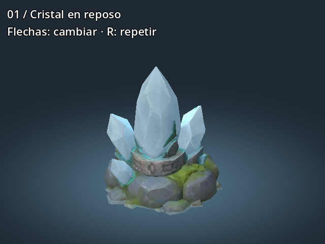
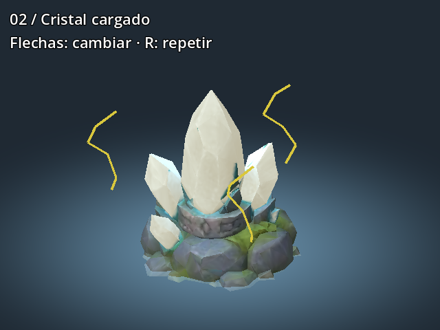
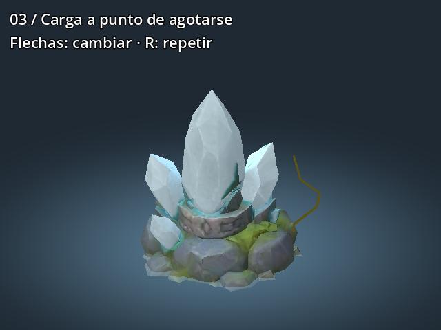
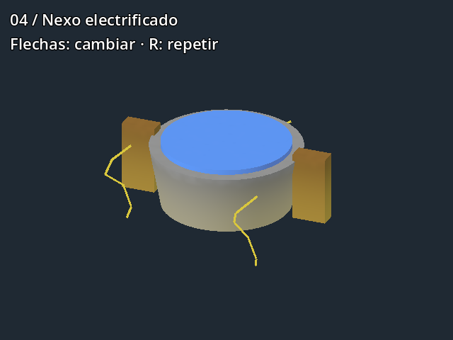
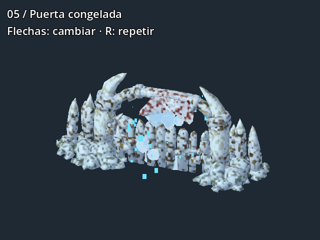
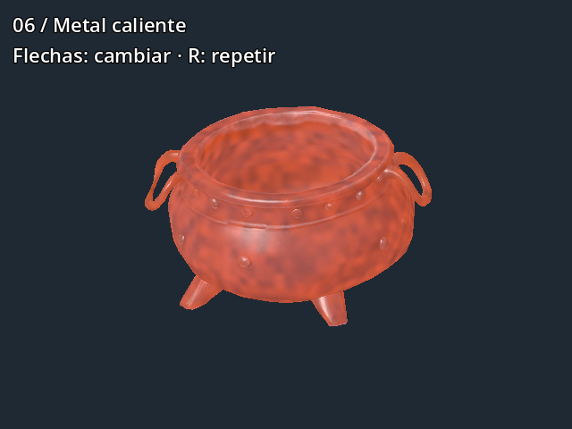
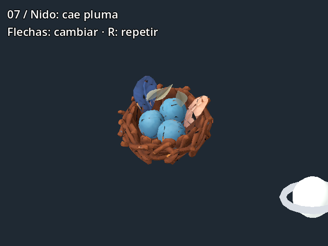
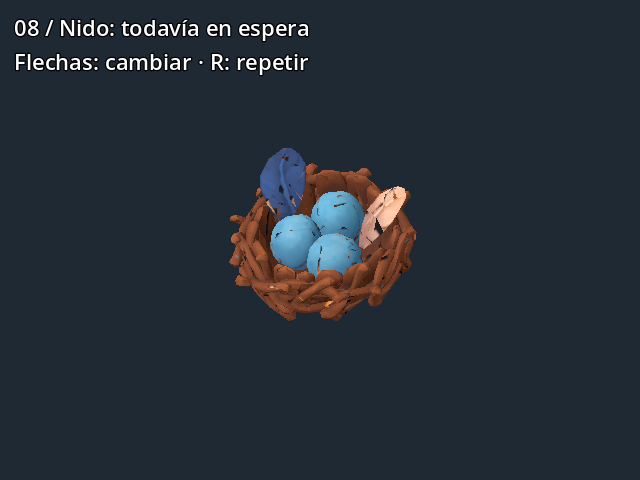
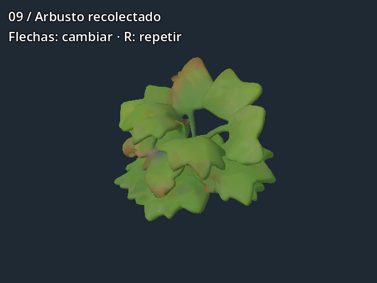
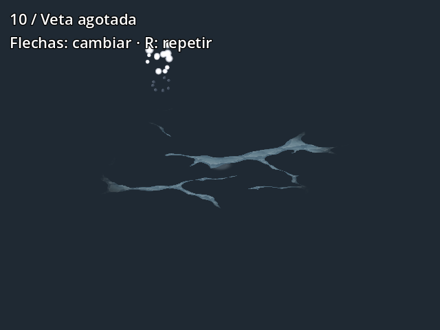
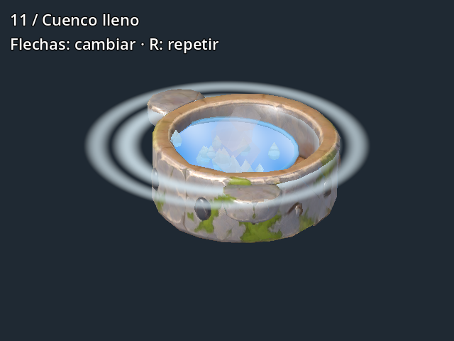
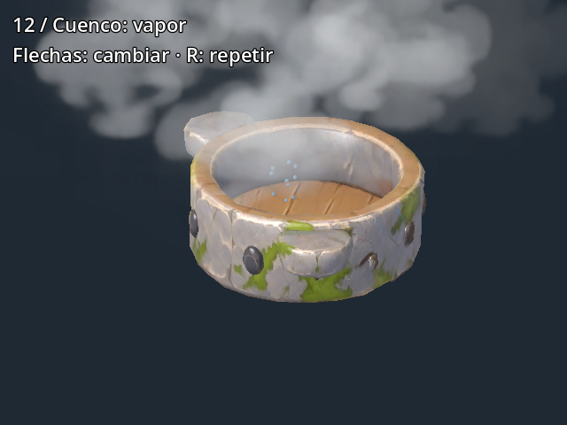
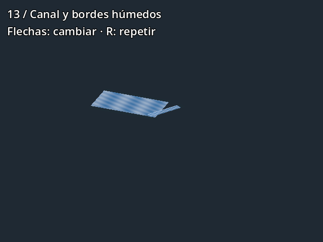
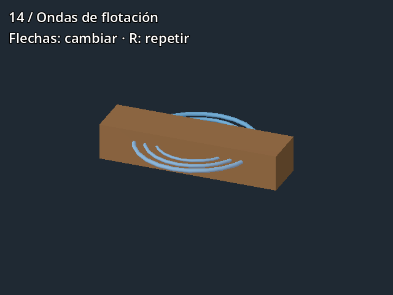
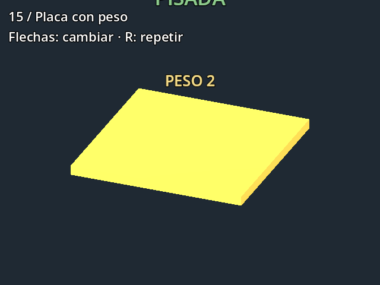
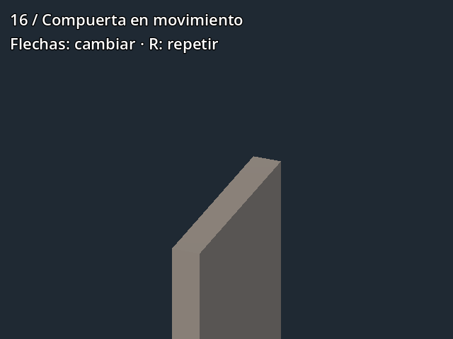
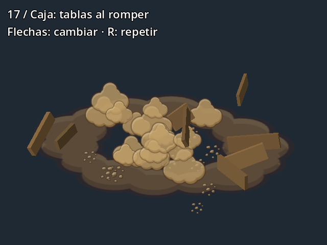
Salidas, controles y logs: output/interacciones_codigo_2026-11-25/. Prueba nueva: herramientas/prueba_feedback_objeto.gd. Capturador: herramientas/captura_interacciones_codigo.gd. Sin commit.